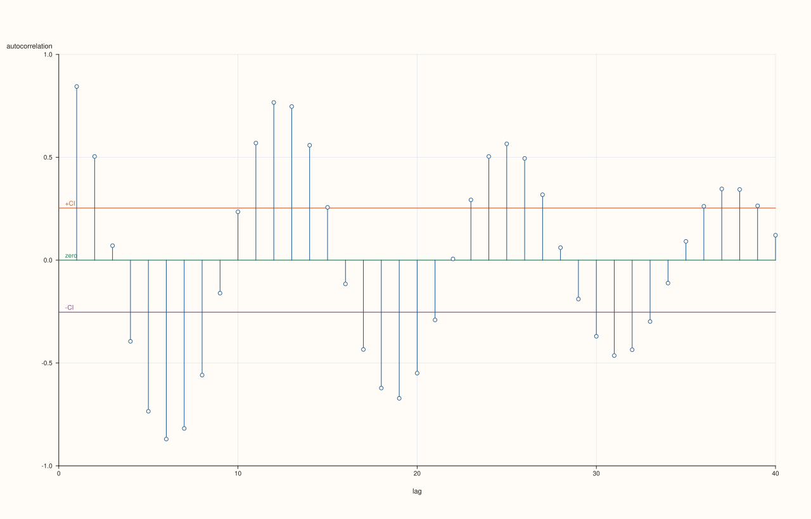
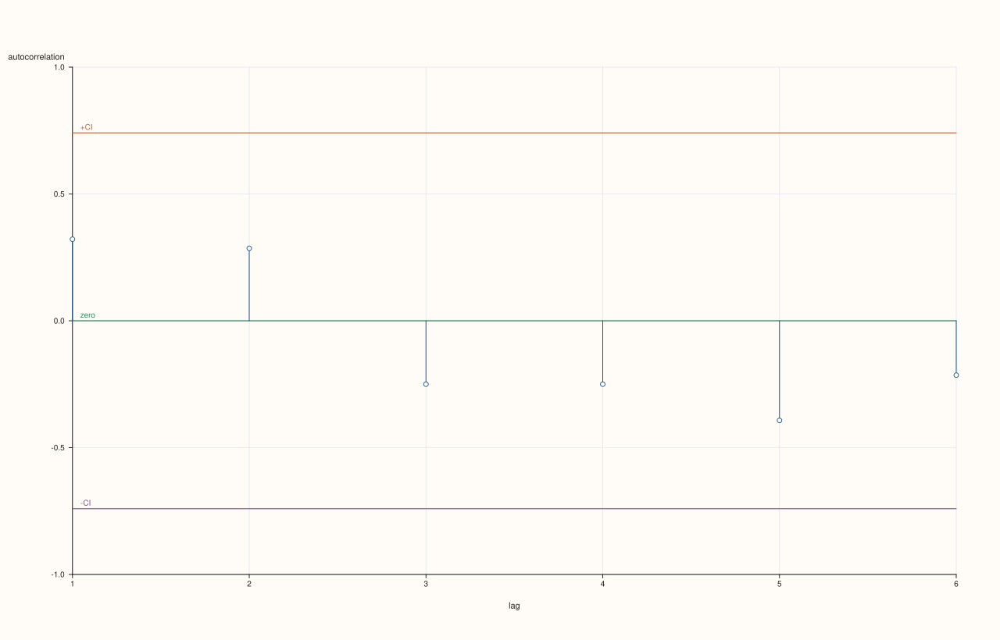
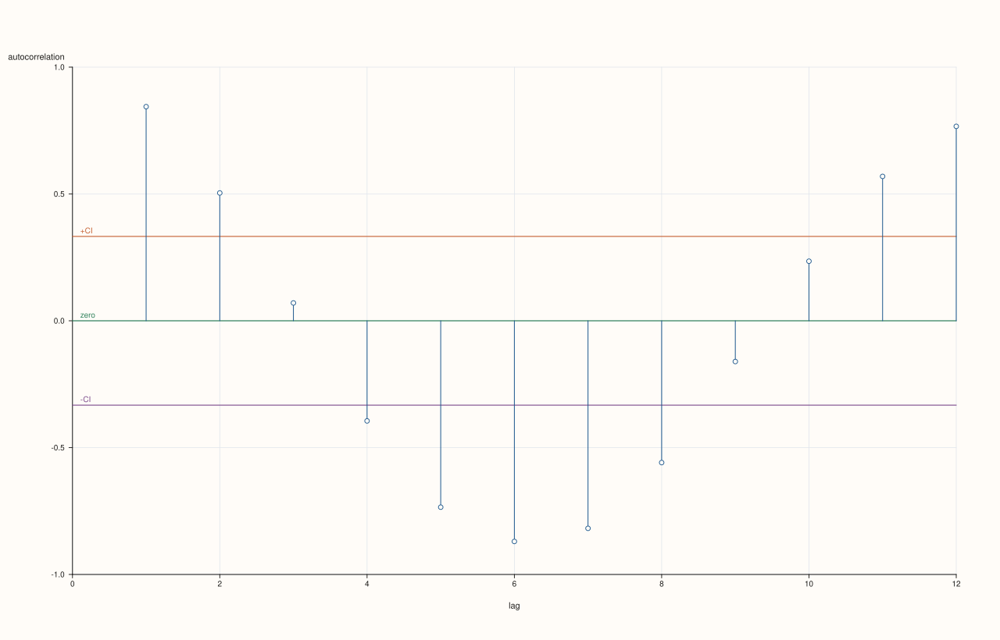
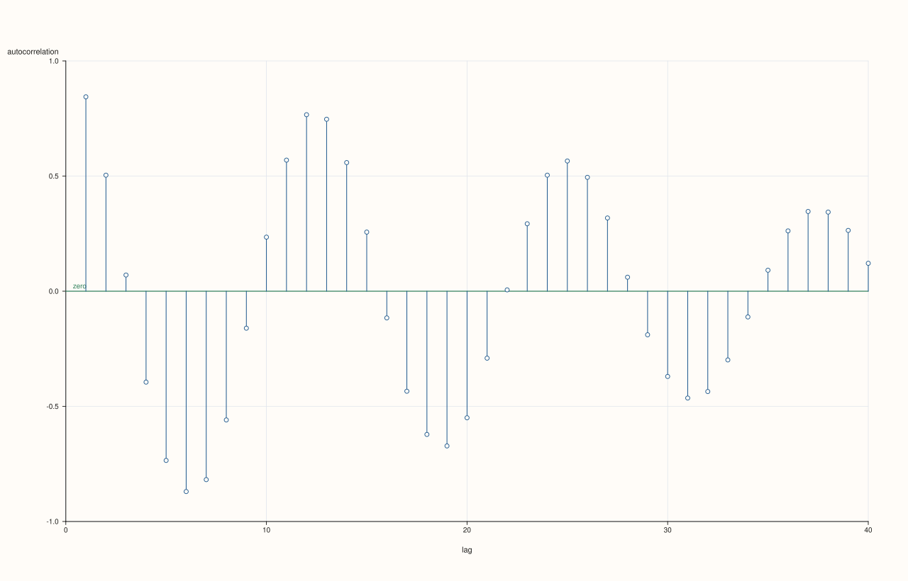

DataFramePlotAccessor::act¶
Back to DataFramePlotAccessor API Reference
Signature¶
DataFramePlotAccessor::act(
std::string_view feature,
const ActPlotOptions& options = {}) const -> pluss::pl::Studio
What It Does¶
Draws an autocorrelation plot for one numeric feature: for each lag k from 1 up to
max_lag, computes the Pearson correlation between the series and itself shifted by k
positions, and draws one vertical spike per lag at that correlation value. This is a
standard diagnostic for spotting periodicity or serial dependence in a sequence — a spike
that stays well outside the confidence band at a given lag suggests the series at that lag
is not just noise.
act() is one of three closely related single-feature diagnostic plots on this accessor,
alongside lag() (a single lag’s scatter, rather than every lag’s correlation)
and bootstrap() (a resampling-based diagnostic, unrelated to lags). All
three share the same feature-resolution rule: the named feature must resolve to exactly one
numeric (Series-kind) feature, validated via the accessor’s
numeric_feature_names(frame_, {feature}, where) call — passing a non-numeric feature name
throws "<where>: feature '<name>' is not a numeric Series".
Important
include_zero_lag is always false here — lag 0 (always 1.0) is never shown
Internally, act() delegates to the same autocorrelation machinery used elsewhere in
PlussPl’s flash layer, but always with include_zero_lag = false. The lag-0
autocorrelation of any series with itself is trivially 1.0 and isn’t informative, so
act()’s spikes always start at lag 1, never lag 0.
Note
At least three data points are required
The underlying autocorrelation computation needs at least three points to be meaningful; a
feature with fewer than three rows throws "flash::acfplot requires at least three points"
even though ActPlotOptions itself has no explicit minimum-row-count field.
Parameters¶
feature (std::string_view)
The single numeric feature to autocorrelate against its own lagged copies. Must resolve
to a Series-kind feature — see the shared-diagnostics note above.
options (ActPlotOptions)
cpp struct ActPlotOptions { std::int64_t max_lag{40}; bool show_confidence_band{true}; double confidence_level{0.95}; float trace_width{1.2F}; };
max_lag is clamped internally to [1, n - 1] where n is the feature’s row count, so
requesting a max_lag larger than the data supports doesn’t throw — it’s silently
capped. show_confidence_band draws two horizontal reference lines at
±z / sqrt(n), where z is the z-score for confidence_level (using the same lookup
table as bar()’s ci_enabled whiskers: 0.99 → 2.575829, 0.98 → 2.326348, 0.95 → 1.959964, 0.90 → 1.644854, anything else → 1.281552). A spike
that crosses outside this band at a given lag is a rough visual cue that the
autocorrelation at that lag is unlikely to be pure noise. trace_width controls the
stroke width of each spike.
Returns¶
pluss::pl::Studio
A figure with one pane containing one autocorrelation spike per lag (1..max_lag), a
zero reference line, and (when enabled) two confidence-band reference lines.
Examples¶
Example 1. Default options: a periodic-looking sequence, autocorrelated out to lag 40 (or fewer, if the data is shorter).
using namespace pluss::table;
std::vector<double> wave;
for (int i = 0; i < 60; ++i) {
wave.push_back(std::sin(static_cast<double>(i) * 0.5) + 0.1 * (i % 3));
}
auto series = DataFrame({
{"signal", Thread(pluss::make_series(wave))},
});
auto chart = series.plot().act("signal");
chart.show();
Since wave has 60 rows, max_lag = 40 (the default) fits within the [1, 59] clamp range
unchanged; expect strong spikes near lags that are multiples of the wave’s period.

Example 2. A shorter feature: max_lag is silently clamped rather than throwing.
auto small = DataFrame({
{"reading", Thread(pluss::make_series({4.0, 5.0, 4.5, 6.0, 5.5, 7.0, 6.5}))},
});
auto chart = small.plot().act("reading");
chart.show();
reading has 7 rows, so max_lag is clamped to 6 (n - 1) even though the requested
default is 40; spikes are drawn only for lags 1..6.

Example 3. An explicit ActPlotOptions, narrowing max_lag, using a stricter
confidence_level, and thickening the spikes.
ActPlotOptions options;
options.max_lag = 12;
options.confidence_level = 0.99;
options.trace_width = 2.0F;
auto chart = series.plot().act("signal", options);
chart.show();
The confidence band widens (using z = 2.575829 for 0.99 instead of the default 0.95’s
1.959964), making it harder for a spike to appear “significant.”

Example 4. Disabling the confidence band entirely.
ActPlotOptions bare_options;
bare_options.show_confidence_band = false;
auto chart = series.plot().act("signal", bare_options);
Only the raw spikes and the zero reference line are drawn — no ±CI lines.

Example 5. A non-numeric feature throws.
auto tagged = DataFrame({
{"signal", Thread(pluss::make_series({1.0, 2.0, 1.5, 2.5}))},
{"label", Thread(pluss::make_note({"a", "b", "c", "d"}))},
});
try {
auto bad = tagged.plot().act("label");
} catch (const std::exception& e) {
std::cout << e.what();
}
Output¶
DataFrame::plot().act: feature 'label' is not a numeric Series
Notes¶
featuremust resolve to exactly one numeric feature — see the shared-diagnostics note above.Lag
0is never shown; spikes start at lag1.max_lagis clamped to[1, n - 1], never throwing for an over-large request.A feature with fewer than three rows throws before any spike is drawn.
Returns a
pluss::pl::Studio— seeline()’s important callout for how to view or save the result.
See Also¶
DataFramePlotAccessor::lag: a single lag’s scatter plot, rather than every lag’s correlation coefficient.DataFramePlotAccessor::bootstrap: another single-feature diagnostic, based on resampling rather than lags.DataFramePlotAccessor::bar: shares the same z-score-for-confidence lookup table for itsci_enabledwhiskers.